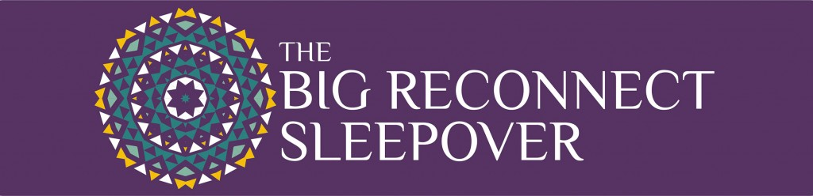
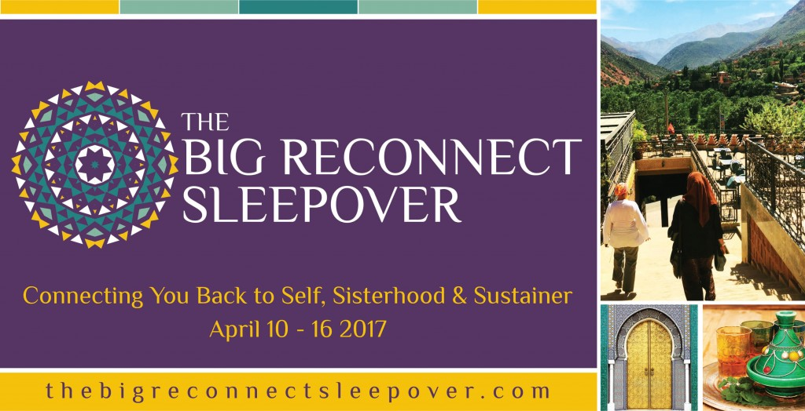

Life is exhausting. This is a sentiment we all agree on at some point in our lives. Being a wife and mother means I quickly lose track of the Muslim woman I am. I had no trouble embracing motherhood, alhamdulillah. But, naturally, as the years went by, I sacrificed parts of myself to accommodate the little lives growing up around me. I was a friend, a painter, a writer, a Muslim, a woman. A woman with interests and a thirst for adventure. Not that motherhood isn’t the most exciting, turbulent and rewarding adventure I have been blessed with, but burnout is inevitable when you dedicate yourself so completely to these roles.
When struggling with this inner battle, I would turn to other mothers to see how they cope. As with all parenting dilemmas, there existed two camps of pretty strong opinions. Camp 1 informed me that motherhood leaves no room for selfishness. Do not expect to find time for yourself, because that is unrealistic. You cannot be a dedicated mother whilst thinking about yourself. Selfishness can come when the children have grown up and left you alone. Discussions with this camp left me rather unfulfilled and negative. Emotions I don’t often feel when discussing my children.
So, along came Camp 2, the camp that had children, but still retained a sense of individuality. The camp that had no issue with babysitters and long breaks from their children. The camp that consistently prioritized itself, falling back on the understanding that you cannot care for others if you do not care for yourself first. Now, whilst I agree with this philosophy, I only agree in moderation. Leaving my children with other carers on a regular basis was not something I was ready to embrace, no matter how much personal space and individual enlightenment it provided.
Then The Big Reconnect Sleepover (#TBRS16) happened; a retreat for sisters who longed for a chance to breathe, not escape, not deny their duties as Muslim mothers and wives, but a chance to embrace them whilst also caring for themselves. It didn’t require a long-standing arrangement, and it didn’t require I develop a habit of regularly leaving my children. All it required was a willingness to breathe. To re-align myself with who I am on this earth, and what is expected of me and how I can nurture myself into the best possible version, capable of achieving and exceeding those expectations. #TBRS16 was much like the first time my babies slept through the night; I experienced a long and decent night sleep after a truly exhausting day. When I woke up, I felt refreshed. I felt alive. I returned to my role as mother and wife, I held my children and hugged my husband, happy to face another year of dedication to the blessings Allah has bestowed on me.
I felt connected. Not just with myself and my identity as a Muslim, but connected to a truly special group of sisters. The intimacy felt at #TBRS16 was inspirational. Our presence hugged each other, comforting each other through the trials we were all facing, but didn’t have to talk about.
With each fun and joyous activity bringing a smile on our faces, we bonded. We bonded on the roof of the riad in Marrakech, as we were guided through a group visualisation activity, we each visited a place within ourselves that taught us something new. Tears were shed and hearts were lifted. Like I said, we didn’t have to share the home truths we found, we simply accepted them in a safe and comforting environment. We bonded over delicious home-cooked meals, complete with mint tea and light-hearted discussions, sometimes late into the night. We bonded amongst the gushing, yet tranquil sounds of the waterfalls. We bonded as we clutched onto each other whilst we stumbled down the mountains. We bonded over spices and tagines as we learnt to cook the traditional Moroccan dish.
We bonded. We laughed. What makes this retreat genuinely incredible, is the variety of personalities it accommodates. I am a mother and wife. But whether you are single, divorced or without children, this retreat provides an amazingly unique and personal experience. Whatever battle you are facing at home, be it with family, work, friends, or even with your deen, #TBRS16 was designed to strengthen you and enlighten you to your true purpose and identity, and using this enlightenment, you find the energy and clarity of mind to return to your life and duties with a smile and a fresh perspective. And it is all down to Sisters Brooke and Khalida, without whom, this retreat, this breath of beautiful fresh air, would not have been possible. What was going through their minds as they planned this incredible retreat?
When did you both come up with the idea of a sisters-only retreat?
Brooke Benoit: I have been mulling over doing an artists’ retreat for some time now. Morocco has been incredibly inspiring to my visual art aesthetic and it would be so much fun to share the beauty of Morocco with other artists… then after meeting up with Khalida very briefly in Essaouira in 2015, she brought up her idea for a retreat for Muslim women and I loved it. After our first one, we now want to do it again and again, and in various ways to benefit women (and families) at various stages in their lives, insha Allah.
What are the main focuses of the retreat and how do you intend to achieve them?
Khalida Haque: The main focus is the women attending. We want them to be able to feel comfortable enough to be themselves, to express themselves and to challenge themselves. I really do believe that we have to step out of the comfort zone, the zone that we are used to being in, living in, to truly discover. And what better way to do that then to travel and meet up with a bunch of ‘strange’ sisters, and be hosted by an odd couple who really want to help you find you, your potential, and your purpose?!
Muslim women seem so busy these days. Is a retreat realistic?
Khalida Haque: I think that a retreat is as realistic as a woman (and her family) wants to make it. Lives are busy. It is a dis-ease of current times. However, I believe it is really important, no, essential, that we take time out from our busy, overcrowded and overwhelming lives to pause, to reflect and to reconnect to ourselves and our true purpose, bi’idhnillah.
Brooke Benoit: Yes, of course there are other ways to work on one self and recalibrate, but to physically remove one’s self from your routine and take the time to focus is pretty amazing. And it’s wonderful when reluctant women ask their families about it and the family knows how badly she needs a break and truly deserves one.
Why do you believe sisters should prioritise themselves? How will this retreat help?
Brooke Benoit: There are all these adages about how women should care for themselves first so as to be better care providers, such as putting your oxygen mask on first before your child’s or the saying “If mama ain’t happy, ain’t nobody happy.” But in Islamic cultures while we have the belief that Jannah lies at the feet of the mother and that to carry a mother on your back at Hajj will never be enough to repay her kindnesses and suffering, we still have this expectation that mothers (and women in general) are to be absolutely self-sacrificing, even though there is nothing in the Sunnah that says such. I have found many Muslims to actually be pretty harsh about their expectations on women, while we know that the Prophet Muhammad (SAW) said “and your body and your family have a right on you” (Al-Bukhari), we don’t extend this “body” portion to women so much. We need physical rest, which is nearly impossible to get when surrounded by their families and life-duties. Women need time and space to replenish their body – including their mind and heart. We are repeatedly asked about bringing children on this retreat and have to remind sisters that no, they physically and emotionally cannot do the work of reconnecting to themselves while simultaneously attending to their child’s or anyone else’s needs. That’s why we have created this space, this retreat. (Babes in arms are welcome).
Why have you chosen Morocco? Would you try other countries?
Brooke Benoit: Because Morocco is incredible!!! Really, this is a beautiful country, visited by millions of people every year. It’s rich with Islamic culture and a perfect setting to reconnect with sisters from all over the world (including Moroccan sisters), and to reconnect to Sustainer in a Muslim country. So, yes, we do intend to take this journey to other Muslim-majority countries that many women would be eager to visit. In sha Allah! And it’s a great source of altruism, nearly every penny or pound spent on this holiday goes to Muslim families here and we work with several charitable opportunities. Very win/win.
What do you believe is the biggest challenge for Muslim women today?
Khalida Haque: The biggest challenge for Muslim women today is themselves. We are currently an insecure bunch that lack esteem and confidence and this is primarily because the Ummah, as a whole, is in disarray. I think it is time we pick up the reins of our lives, take responsibility and have tawakkul (full trust) in Allah and His plans for us. We have nothing to fear, but yet we fear so much. The world and the problems within it will remain, but for us to be able to address them and not burn out we need to take the time for ourselves and regroup (mind, body and soul).
Brooke Benoit: Yes, this is not to say women are to blame, but this is how the disarray has affected us. We women just want so much to do the right thing and it’s difficult to see what that is right now. We have definitely taken on some of these prevalent misunderstandings of our roles as people and believers to the point of being unwell and out of balance.
How do you want sisters to feel as they walk away from your retreat?
Khalida Haque: We want them to feel empowered, to feel as though they have grown, to know what they want, to develop a ‘can do’ attitude, to recognise their worth and their value, to see that they are so much more than they think themselves to be, to feel able to shine, to stop dimming their light and to feel reconnected and reinvigorated. We want them to take away a torch that they use to light the fire in others. We want them to feel good and to spread goodness. Insha Allah!
Brooke Benoit: Yes, truly to reconnect to what they knew/know of themselves and the world. And then act accordingly. Insha Allah.
The retreat provides a variety of different activities. What are the reasons behind these activities? Do they help sisters in different ways?
Khalida Haque: Brooke and I have tried to incorporate all the activities that we think will benefit the participants in some shape or form. They are indeed meant to help sisters in different ways. There are “in breath” activities which are very mind and internal world heavy and there are “out breath” ones which are external and sensory. And yet others that are a combination. The pamper session is about enabling the sisters to relax and be pampered because we know they deserve it. The visualisations are about reconnecting sisters to themselves and their Sustainer and helping them to continue the journey forward, insha’Allah. The cooking class and the dinner party with our Moroccan village sisters are about sisterhood and connecting with it. We don’t want sisters to feel compelled to participate in all or any of the sessions but we hope that they will take up all that is of interest and use to them. Basically, we want them to do it all and more!
Khalida, how has your work as a counsellor equipped you to host this retreat?
Khalida Haque: Hmmm… That’s an interesting question. I guess primarily it enables me to provide the one-to-one counselling sessions because that’s the basic day job. As a counselling psychotherapist I hope that I understand people and am able to read people well, besides having good listening skills. These qualities alongside being accepting and non-judgemental equip me to host the retreat so that I can be responsive to our guests’ needs and bi’idhnillah manage the group settings so that people don’t feel pressured in any way. Of course, I’m human and may get it wrong but I’m open to constructive criticism and feedback. I hope that not only my work experience but also my personal and life experiences provide me with the ability to be the kind of host that the sisters who attend not just need but want and enjoy being in the company of. I love seeing people thrive and insha’Allah that comes across in whatever role I play in their lives.
Brooke, what have you learnt during your time with SISTERS Magazine that has prepared you to host the retreat?
Brooke Benoit: That there are many, many ways to be a sister and in the end we are all family, each of us with something to give and something to take.
Hosted by SISTERS Content Director, Brooke Benoit, and prolific contributor, Khalida Haque, The Big Reconnect Sleepover will gather together again in Morocco next spring, April 10th – 16th, 2017. Visit TheBigReconnectSleepover.com to register and receive an Early Bird discount if you register before the end of 2016.

Khadijah Hayley is a writer, editor and writing consultant. For updates on current services and e – courses, check out her Facebook page, www.facebook.com/khadijahhayley